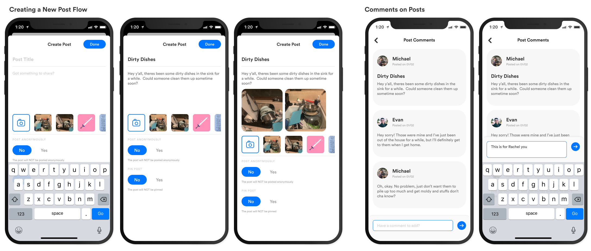
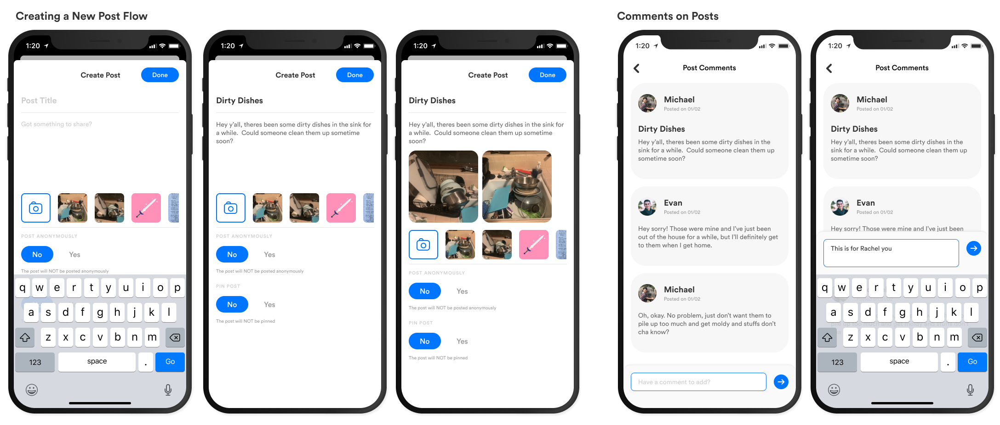
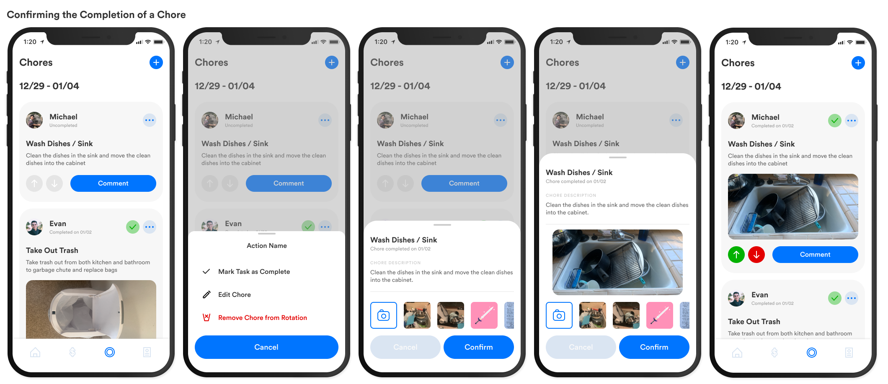
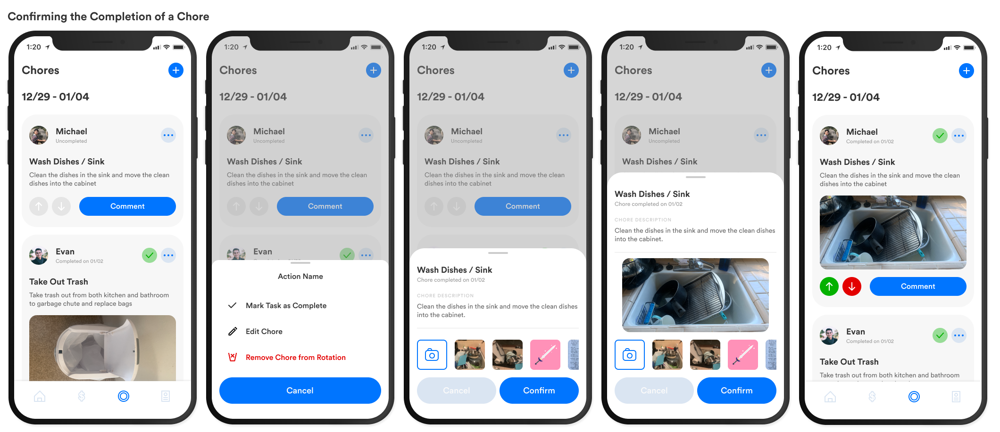

The first step to understanding the issues college students were having in their shared living spaces was to visit said living spaces, observe the surroundings and conduct small informal interviews with some of the house mates. Here I was able to observe natural interactions and ask follow up questions about how people felt or approached these different scenarios.

After conducting my research, I formulated 2 personas that helped me visualize the people I am designing for. This was particularly helpful in mapping out their current solutions to their issues and seeing how they are still frustrated with them.


After laying out my observations, I mapped out the key insights that I gained from them and continued to map out possible user needs and corresponding possible product features. From my research i identified the key insights to be:
- The primary root of most of the issues are that there is a lack of overall healthy and effective communication between housemates.
- The aforementioned lack of communication results in a house chores either being neglected or done at a subpar level with no accountability from any housemates.
- Additionally, not communicating results in housemates being unwilling to purchase communal items out of fear of not being properly reimbursed
- Housemates want to address issues, but don’t want to bring it up unless they have the support of other housemates.

After laying out my observations, I mapped out the key insights that I gained from them and continued to map out possible user needs and corresponding possible product features. From my research i identified the key insights to be:


 



 
